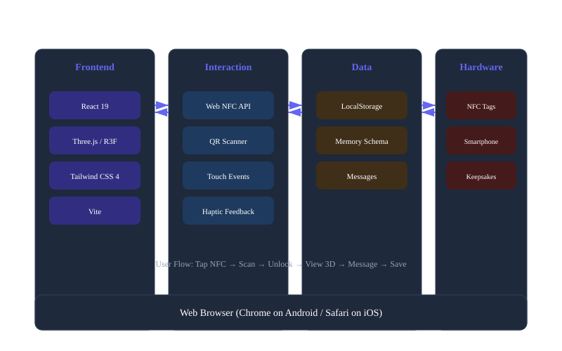
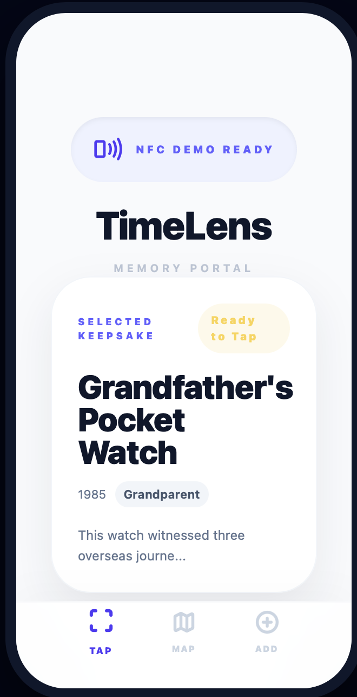
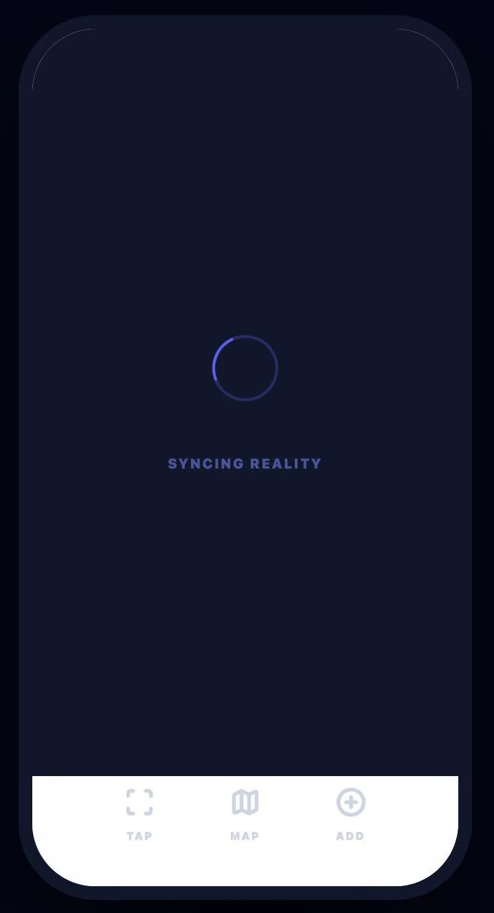
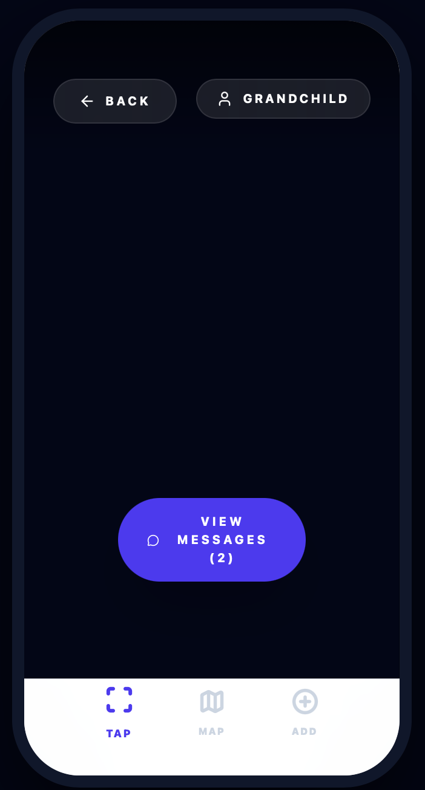
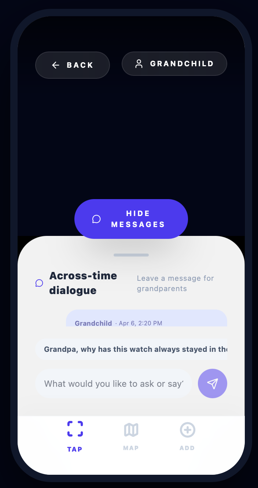
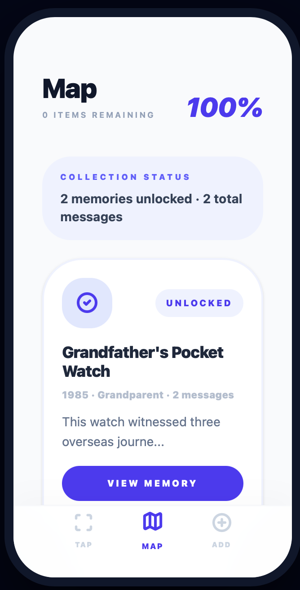
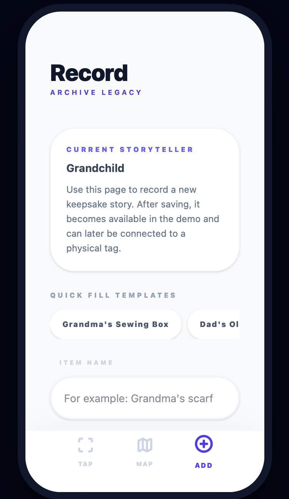

System Implementation
Technical architecture and working prototype
🏗️ System Architecture

Frontend Layer
- React 19 + Vite
- React Three Fiber (3D)
- Tailwind CSS 4
- Lucide React Icons
Interaction Layer
- Web NFC API
- QR Code Scanner (html5-qrcode)
- Touch & Gesture Support
- Haptic Feedback
Data Layer
- LocalStorage Persistence
- Memory Object Schema
- Message Thread Storage
- User Preference Storage
Hardware Layer
- NFC Tags (NTAG213/215)
- Mobile Phone (Android/iOS)
- Physical Keepsakes
Screenshots
Key screens from the working prototype
📱 NFC Scan Interface

Features: Select from available keepsakes, tap the NFC button to simulate scan, view locked/unlocked status.
🔄 Scanning Animation

Features: Animated loading spinner, "Syncing Reality" text, smooth transition to memory view.
🎲 3D Memory View

Features: Interactive 3D model with orbit controls, floating story card with year/title/story, user role toggle.
💬 Message Interface

Features: Color-coded messages (grandchild=blue, grandparent=amber), quick reply suggestions, timestamp display.
🗺️ Memory Map

Features: Visual collection progress, locked/unlocked memory cards, quick actions for each memory.
➕ Create Memory

Features: Item name input, year selector, story textarea, quick fill templates, save button.
Demo Video
Watch TimeLens in action
🎬 Video Demo
Embed your demo video here
Options:1. Upload to YouTube/Vimeo and embed
2. Upload MP4 directly to GitHub and use <video> tag
3. Link to external video file
Video Demo Script
- Introduction (10s): Show TimeLens logo and tagline
- The Hook (15s): Present physical keepsake (e.g., pocket watch)
- NFC Scan (15s): Tap phone to NFC tag, show scanning animation
- Memory Reveal (20s): 3D model appears, story card displays
- Message (15s): Send a message from grandchild to grandparent
- Map View (10s): Show collection progress
- Create Memory (15s): Demonstrate adding a new keepsake
- Closing (10s): Show tagline and team info
Technical Details
Implementation notes and challenges
⚡ Performance Optimizations
- Lazy loading for 3D models
- Canvas dpr limiting for mobile
- LocalStorage batch updates
- CSS animation for scanning state
♿ Accessibility Considerations
- Large touch targets (44px min)
- High contrast color ratios
- Clear visual hierarchy
- Reduced motion support
🔧 Challenges & Solutions
Challenge: Web NFC API only works on Android Chrome
Solution: Added QR code fallback for iOS devices
Challenge: 3D performance on low-end phones
Solution: Reduced polygon count, simplified materials
📦 Dependencies
{
"react": "^19.2.4",
"@react-three/fiber": "^9.5.0",
"@react-three/drei": "^10.7.7",
"three": "^0.183.2",
"lucide-react": "^0.577.0",
"tailwindcss": "^4.2.2"
}Try TimeLens
Experience the prototype yourself
🚀 Live Demo
Access the working prototype online. Best experienced on mobile devices with NFC support.
💡 Demo Tips:
- Use mobile phone for best experience (10:19.5 ratio optimized)
- Video Demo Mode: Auto-play presentation with
?demo=video - NFC Tools: Access tag programming interface
- Switch user: Toggle between grandchild/grandparent views